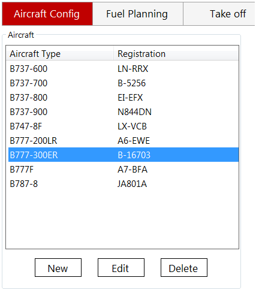

QSimPlanner Manual
Aircraft Config
From the aircraft configuration menu, you can add/edit/delete a profile.
After clicking "edit", various properties can be set. Fuel consumption, takeoff and landing profiles can be set to "None". However, if the fuel consumption profile is "None", that aircraft will not appear in fuel planning page. Takeoff/landing profiles are similar.
Flight planning
This is where the route planning and fuel calculation is done.
The route finder comes with a SID/STAR filter. There are 2 modes, blacklist and whitelist.

It's possible to avoid finding a route passing through certain countries.


The action menu contains 4 items:
- Find route: Automatically finds the shortest route between the two airports. The SID/STAR filters, avoided countries, and current oceanic tracks are taken into consideration.
- Analyze route:
- Show map: Plot the route found or analyzed with Google Map.
- Export: Export the route found or analyzed as a flight plan file, as set in options.
The advanced tool can find or analyze routes which are:
- From airport to airport
- From airport to waypoint
- From waypoint to airport
- From waypoint to waypoint